의공기사 (2016-03-06 기출문제)
1과목: 기초의학 및 의공학
1. 가변저항 센서(potentiometer)에 대한 설명으로 틀린 것은?
- 저항 측정을 통해 변위를 측정한다.
- 직선 변위만 측정할 수 있다.
- 교류와 직류 모두 사용할 수 있다.
- 선형성이 좋고 측정 범위가 넓다.
(정답률: 86%)

2. 각성 시에 전두부에서 주로 나타나는 뇌전도 파형은?
- α파
- β파
- γ파
- δ파
(정답률: 70%)
3. 전극을 이용한 측정에서 발생하는 잡음의 종류 및 원인에 대한 설명으로 틀린 것은?
- 백색잡음 : 전극의 전해질 건조, 리드선 커넥터 부분의 연결 불량, 리드선이 외부 장치와 단락
- 전원 잡음: 공통 전극의 접촉 불량 또는 단선, 리드선이 외부 장치와 단락
- 동잡음 : 전자기파의 간섭
- 출력 신호 포화 : 전극과 리드선과의 단선, 리드선의 움직임, 전극 건조
(정답률: 77%)
4. 심장 전기 자극의 이동경로로 옳은 것은?
- 동방결절(SA node) → 심방(atria) → 방실결절(AV node) → 심실(ventricle) → 히스속(bundle of His) → 푸르키니에 섬유(Purkinje Fiber)
- 동방결절(SA node) → 심방(atria) → 방실결절(AV node) → 히스속(bundle of His) → 푸르키니에 섬유(Purkinje Fiber) → 심실(ventricle)
- 방실결절(AV node) → 심방(atria) → 동방결절(SA node) → 히스속(bundle of His) → 푸르키니에 섬유(Purkinje Fiber) → 심실(ventricle)
- 방실결절(AV node) → 동방결절(SA node) → 심방(atria) → 히스속(bundle of His) → 푸르키니에 섬유(Purkinje Fiber) → 심실(ventricle)
(정답률: 88%)
5. 어떤 금속의 반전지 전위(half-cell potential)에 대한 설명으로 옳은 것은?
- 1기압의 수소기체를 기준으로 상대 전위를 측정한다.
- 외부의 기계적 압력에 의해 발생하는 전위이다.
- 두 금속의 열전도율 차에 의해 발생하는 전위이다.
- 두 금속의 열팽창률 차에 의해 발생하는 전위이다.
(정답률: 80%)
6. 동맥과 정맥에 대한 설명으로 옳은 것은?
- 정맥에는 판막이 있다.
- 정맥의 벽은 동맥과 마찬가지로 단일층으로 되어 있다.
- 정맥은 동맥에 비해서 두꺼운 혈관벽을 가지고 있다.
- 중간 크기와 정맥이나 대정맥에는 외막 속에 혈관 자체에 영양을 공급하는 자양혈관이 있다.
(정답률: 88%)
7. 변위에 따라 저항이 바뀌는 센서는?
- 열전쌍
- 선형 가변 차동 변환기
- 스트레인게이지
- 압전센서
(정답률: 64%)
8. 전극의 종류와 관련하여 표면전극이 아닌 것은?
- 일회용 금속판 전극
- 바늘형 전극
- 부유 전극
- 흡착 전극
(정답률: 88%)
9. 심장 박동 주기 중 심실 압력은 급격히 증가하나 모든 판막이 닫혀 있기 때문에 심실용적이 일정하게 유지되는 시기는?
- 심방 수축기
- 심실의 등장성 수축기
- 급속 구출기
- 감소 구출기
(정답률: 84%)
10. 다음 그림은 일회용 금속판 전극의 단면을 나타낸 것이다. 그림에서 전해질 젤(electrolyte gel)은 어느 부분인가?
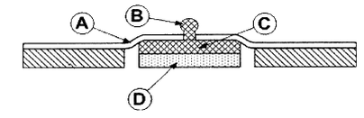
- A 부분
- B 부분
- C 부분
- D 부분
(정답률: 92%)
11. 신경과 근육의 연접부위에 대한 설명 중 틀린 것은?
- 운동신경 말단에는 다수의 소포(vesicle)가 있고 이곳에 미토콘드리아 및 화학전달물질인 아세틸콜린 등이 함유되어있다.
- 흥분이 신경종말까지 전이되면 소포 속에 저장되어 있던 아세틸콜린이 분비되어 신경종말과 종판 사이의 좁은 간격으로 확산 유출된다.
- 유출된 아시틸콜린은 근육의 수용기(receptor)에 도달되어 수용기-아세틸콜린 복합체를 만든다.
- 효소인 아세틸콜린 에스테라제는 아세틸콜린복합체를 활성화 시켜준다.
(정답률: 62%)
12. 근육수축의 가장 간단한 형태로서 단일자극에 대한 단일수축을 무엇이라 하는가?
- 경축(contracture)
- 강축(tetanus)
- 연축(twitch)
- 긴장(tonus)
(정답률: 75%)
13. 심장에서 정상적인 심박조율 기능을 하는 부위는?
- 푸르키니에 섬유
- 히스번들
- 방실결절
- 동방결절
(정답률: 78%)
14. X-선을 사용한 골 연령 판정에 사용되는 부위는?
- 골막
- 골수강
- 치밀골
- 골단선
(정답률: 72%)
15. 체온조절을 담당하는 신경계의 부위는?
- 대뇌
- 소뇌
- 시상하부
- 측두엽
(정답률: 90%)
16. 금속저항 온도계를 이용한 온도측정 회로에서 센서에 큰 전류가 흐르도록 설계해서는 안 되는 이유는?
- 제작상의 어려움 때문에
- 회로 구성의 어려움 때문에
- 온도센서의 부식 때문에
- 소자의 온도 상승 때문에
(정답률: 90%)
17. 센서가 활용되는 측정회로에서 입력이 없음에도 불구하고 출력전기 신호가 0이 아닌 값이 나오는 현상을 부르는 용어는?
- 감도
- 동작범위
- 복귀도
- 오프셋
(정답률: 89%)
18. 열전쌍(thermocouple)의 특징이 아닌 것은?
- 열기전력 특성이 연속적이고 선형성을 가진다.
- 화학적, 기계적으로 안정적이다.
- 변위를 측정할 때 사용된다.
- 안정적인 고감도 증폭기가 필요하다.
(정답률: 75%)
19. 인슐린(insulin)이 생산되는 곳은?
- 간
- 췌장
- 신장
- 비장
(정답률: 81%)
20. 열전쌍에 적용되는 원리로서, 2종의 금속 또는 반도체를 폐로가 되도록 접속하고, 접속한 두 점 사이에 온도차에 대해 기전력이 발생하여 전류가 흐르는 현상은?
- 제만 효과
- 제벡 효과
- 전위차 효과
- 접합 효과
(정답률: 93%)
2과목: 의용전자공학
21. 생체압력계측 중 혈압측정에 있어 간접측정 방법으로 틀린 것은?
- 카테터 삽입 측정법
- 초음파 센서 이용법
- 오실로메트릭법
- 청진법
(정답률: 89%)
22. 펄스의 주기와 펄스폭은 일정하고 펄스 진폭만을 입력 신호 전압에 따라 변화시키는 변조방식은?
- 펄스부호변조(PCM)
- 펄스위치변조(PPM)
- 펄스진폭변조(PAM)
- 펄스폭변조(PWM)
(정답률: 90%)
23. 어떤 도체의 단면에 1분 동안 240 C의 전기량이 이동하였을 때 전류는 몇 A 인가?
- 3
- 4
- 5
- 6
(정답률: 92%)
24. 인가전압이 40V인 회로에서 저항 R1에 걸리는 전압은 몇 V 인가? (단, R1=5Ω, R2=15Ω이다.)
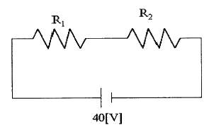
- 10
- 20
- 30
- 40
(정답률: 83%)
25. 정전용량이 C 인 콘덴서의 극판사이에 비유전율이 8인 유전체를 제거하고 공기로 채웠을 때의 용량을 C0 이라고 하면 C와 C0의 관계는?
- C = 8C0
- C = 4C0
- C = C0 / 8
- C = C0 / 4
(정답률: 83%)
26. 입력에 2 VPP의 100 kHz 구형파를 입력하였더니 출력파형은 20 VPP의 삼각파가 되었을 때 Slew rate는 얼마인가? (단, 연산증폭기는 전압이득 10인 비반전 증폭기로 구성하였다.)
- 2 V/us
- 4 V/us
- 20 V/us
- 40 V/us
(정답률: 48%)
27. 다음 회로에서 RL 에 흐르는 전류는 몇 mA 인가? (단, Vin = 2V, R1=R2=R3=2kΩ, RL=500Ω이다.)
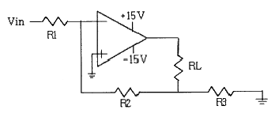
- 4.0
- 2.0
- 1.0
- 0.5
(정답률: 57%)
28. 생체전기 현상을 유도하는 전극 중 단일 세포내에 찔러 넣어 막전위를 기록하는데 사용하는 전극은?
- 표면 전극(surface electrode)
- 피부 전극(skin electrode)
- 미소 전극(micro lectrode)
- 내부 전극(internal electrode)
(정답률: 69%)
29. 다음의 논리함수를 불(Boole) 대수를 이용하여 간단히 하면?
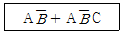
- C
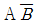
- AC
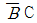
(정답률: 82%)
30. 교류전압 100V, 50 Hz를 반파정류 했을 경우 출력 주파수는 몇 Hz 인가?
- 60
- 120
- 50
- 100
(정답률: 67%)
31. 생체신호 측정에서 심전도 신호의 주파수 대역이 0.01~200 Hz 라고 할 때, 앨리어싱효과(aliasing effect)가 일어나지 않게 하기 위한 표본화 주파수는 최소 얼마 이상이어야 하는가?
- 0.01 Hz
- 100 Hz
- 200 Hz
- 400 Hz
(정답률: 67%)
32. 배전압 정류회로의 특징으로 틀린 것은?
- 승압용 변압기가 필요하지 않다.
- 고전압용으로 사용한다.
- 용량이 작은 커패시터를 사용한다.
- 저전류 용도로 사용한다.
(정답률: 76%)
33. 생체계측기의 특성 중 입력의 보상방법으로 틀린 것은?
- 감도제한
- 부귀환
- 필터링
- 변조
(정답률: 56%)
34. 생체신호 측정전극으로 사용하는 금속전극의 대표적인 재질은?
- 은-염화은(Ag-AgCl)
- 구리(Cu)
- 알루미늄(Al)
- 납(Pb)
(정답률: 82%)
35. 직류회로의 전압과 전류에 대한 설명으로 틀린 것은?
- 1A는 1초에 1C의 전하가 이동하는 비율에 해당하는 전류량이다.
- 전자의 이동방향은 전류의 이동방향과 반대이다.
- 도체에 흐르는 전류는 인가전압의 크기에 비례하고 저항에 반비례한다.
- 전류의 흐름은 일반적으로 음전하가 이동하는 방향이다.
(정답률: 68%)
36. 진공 중의 유전율과 단위를 올바르게 나타낸 것은?
- 8.854 × 10-12 C/m
- 8.854 × 10-12 F/m
- 1.602 × 10-19 A/m
- 1.602 × 10-19 H/m
(정답률: 63%)
37. 클록 펄스(clock pulse)의 주기만큼 입력신호가 지연되어 출력에 나타나는 시프트 레지스터(shift register)에 주로 사용되는 것은?
- D 플립플롭
- T 플립플롭
- RS 플립플롭
- JK 플립플롭
(정답률: 68%)
38. 생체를 대상으로 하는 의료분야에 있어서 새로운 기술을 도입하여 이용하고자 할 경우에는 생체계측의 특수성을 충분히 고려하여야 한다. 이에 맞지 않는 설명은?
- 인간을 측정대상으로 하기 때문에 안전성을 충분히 고려하여야 한다.
- 개체차가 상당히 크고, 장치의 설계나 데이터의 해석에 다양성이 요구된다.
- 측정상태로 인해 생리 상태를 크게 변화시킬 수 있다.
- 일반적으로 반복되는 현상을 검출하기 때문에 즉시성이 요구되지 않는다.
(정답률: 77%)
39. 커패시터 필터에 관한 설명으로 옳은 것은?
- 리플계수
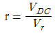
이다. - 리플이 클수록 효율적인 필터이다.
- 커패시터의 용량을 작게 하면 출력전압은 직류에 가까워진다.
- 커패시터의 충전과 방전에 의한 출력전압의 변동이 리플 전압이다.
(정답률: 66%)
40. 심장의 전기생리적 특성에 대한 설명으로 틀린 것은?
- 자동성
- 흥분성
- 유도성
- 전도성
(정답률: 69%)
3과목: 의료안전·법규 및 정보
41. 의료기기법령상 의료기기를 규정에 따라 재심사 신청 시 신청서 제출 대상이 다른 것은?
- 1등급 의료기기
- 2등급 의료기기
- 3등급 의료기기
- 4등급 의료기기
(정답률: 73%)
42. 다음 중 접지공사의 목적이 아닌 것은?
- 뇌해(벼락) 방지용
- 누설전류로 인한 감전 방지용
- 단락사고시 전원차단용 기기의 정지용
- 고압전류를 대지로 흘려 감전을 방지하는 작용
(정답률: 83%)
43. 다음 각 ( ) 안에 알맞은 것은?
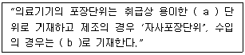
- a : 최대, b : 제조원 포장단위
- a : 최대, b : 수입원 포장단위
- a : 최소, b : 제조원 포장단위
- a : 최소, b : 수입원 포장단위
(정답률: 69%)
44. 의료기기의 전기·기계적 안전에 관한 공통 기준규격에 의거 “정상적인 사용 시에 손으로 지지하는 것을 의도한 기기”를 무엇이라 하는가?
- 고정형 기기
- 이동형 기기
- 수지형 기기
- 영구설치형 기기
(정답률: 87%)
45. 의료기기법상 의료기기 제조업 허가를 받을 수 있는 사람은?
- 금치산자
- 마약 중독자
- 의료기기법을 위반하여 제조업 허가가 취소된 날부터 14개월이 경과된 자
- 의료기기법을 위반하여 금고 이상의 형을 선고받고 그 집행이 끝나지 아니한 자
(정답률: 86%)
46. AMIA(America Medical Informatics Association)에서 권고하고 있는 의료정보학의 목표로 적당하지 않은 것은?
- 정보의 검색과 관리
- 안정적인 연구 및 개발
- 환자관리와 의사결정
- 병원정보시스템
(정답률: 51%)
47. 의료기기법령상 다음 ( ) 안에 알맞은 내용은?
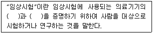
- 정확성, 보편성
- 보편성, 유효성
- 안전성, 정확성
- 안전성, 유효성
(정답률: 83%)
48. 전자파의 발생 원인에 대한 설명으로 틀린 것은?
- 전자파는 전류가 흐르는 송전 전력선 근처에서 발생할 수 있다.
- 높은 자장을 이용한 진단용 MRI에서 전자파가 발생할 수 있다.
- 병원에서 진단목적으로 사용하는 초음파 기기에서는 초음파가 발생하고 전자파는 발생하지 않는다.
- 진단용 CT에서 사용하는 X-선도 전자파이다.
(정답률: 85%)
49. 의료기기의 용기나 외장에 기재하여야 할 사항으로 틀린 것은?
- 쉽게 볼 수 있는 장소에 기재하여야 하고, 보건복지부령이 정하는 바에 의하여 한글로 읽기 쉽고 이해하기 쉬운 용어로 정확히 기재하여야 한다.
- 의료기기의 용기나 외장에 기재한 사항이 외부의 용기나 포장에 의하여 보이지 아니할 경우에는 외부의 용기나 포장에도 같은 사항을 기재하여야 한다.
- 의료기기의 첨부문서에는 보수점검에 관한 사항, 식품의약품안전처장이 기재하도록 정하는 사항, 보건복지부령으로 정하는 사항 등을 기재하여야 한다.
- 의료기기의 용기나 외장에는 제품명, 형명(모델명), 품목허가(신고)번호, 제조업자 또는 수입업자의 상호와 주소, 사용방법 및 사용시 주의사항을 반드시 기재하여야 한다.
(정답률: 76%)
50. 다음은 의료영상의 압축방법 중 무손실 압축을 설명한 내용으로 틀린 것은?
- 대표적인 무손실 압축은 JPEG 이다.
- 의료영상은 진단의 오류를 방지하기 위하여 가능하면 무손실 압축을 실시한다.
- 복원된 영상은 완벽하게 원본과 일치하여야 한다.
- 압축율은 일반적인 압축 기법에 비하여 낮은 편이다.
(정답률: 75%)
51. 의료가스 중 아기 탯줄 혈액 보관 등 냉동용으로 사용하는 가스는 무엇인가?
- 산소
- 수소
- 탄산
- 질소
(정답률: 85%)
52. 다음 중 종이의무기록의 문제점이 아닌 것은?
- 정보 접근의 비효율성
- 정보의 대량 유출 우려
- 중복기록
- 기록자 간의 기록방식의 비일관성
(정답률: 83%)
53. 지식습득 방법 중 인간두뇌의 신경해부학적 사실을 모사하여 신경세포인 뉴런의 작동방식을 컴퓨터상에 구현한 계산모델을 의미하는 것은?
- 규칙기반추론
- 신경회로망
- 사례기반추론
- 데이터마이닝
(정답률: 82%)
54. 다음 중 원격의료에 대한 설명으로 틀린 것은?
- 원격지의 의료종사자와 환자 사이에 정보통신기술을 활용한 의료행위
- 원격통신을 이용한 진단 및 치료 행위
- 병원 내 PACS 연결로 인한 의료정보의 공유
- 화상회의와 원격의료영상전송시스템의 복합 기술
(정답률: 82%)
55. 의료용 접지방식 중 수술실에서 유기될 수 있는 누설전류 및 정전기 등을 신속히 대지로 방류시키기 위한 설비로 격자망을 도전성 몰탈에 접지하는 방식은?
- 바닥도전 접지
- 보호접지
- 정전기 장해 방지용 접지
- 잡음 방지용 접지
(정답률: 73%)
56. 의료기기 생물학적 안전성 시험 시행의 일반적인 고려사항에 해당되지 않는 것은?
- 시험은 완제품 또는 완제품과 같은 방법으로 처리된 원자재에서 나온 대표적인 검체에 대해 시행되어야 한다.
- 의료기기 용출물을 제조할 때, 용출용매와 용추조건이 완제품의 특성 및 사용조건에 적합하여야 한다.
- 생물학적 시험의 결과가 생물학적 위해가 없음을 보증한다.
- 생물학적 평가 이전에 완제품에서 용출될 수 있는 화학물질(extractable chemical)에 대한 정성 및 정량 평가가 이루어져야 한다.
(정답률: 57%)
57. 전기충격에 대한 보호를 기초절연에만 의존하지 않고, 이중절연 또는 강화절연과 같은 추가적인 안전수단이 갖추어진 보호접지나 설치조건에 의존하지 않는 전기기기를 의미하는 것은?
- AP류
- APG류
- 1급기기
- 2급기기
(정답률: 67%)
58. 의료인의 의사결정을 목적으로 컴퓨터를 이용한 보조시스템은?
- 의료용 전문가시스템
- 컴퓨터 의료보조시스템
- 원격의료시스템
- 의료영상시스템
(정답률: 68%)
59. 의료가스를 공급하는 경우 치료 서비스 조건에 적합하도록 설계해야 하는데 적합한 장소가 아닌 것은?
- 환자 휴게실
- 분만실
- 미숙아실
- 마취실
(정답률: 90%)
60. 다음은 국내 종합병원에서 병원정보시스템의 과거, 현재, 그리고 미래 시스템을 나타낸 것이다. 시간 순으로 바르게 나타낸 것은?
- PMS→OCS→EMR→EHR
- PMS→OCS→EHR→EMR
- OCS→EMR→EHR→PMS
- OCS→EHR→EMR→PMS
(정답률: 68%)
4과목: 의료기기
61. 컴퓨터 적외선 열 영상 진단기의 특징으로 틀린 것은?
- 방사선 방식이 아니므로 방사선 노출이 없다.
- 인체에 무해한 적외선을 이용하므로 통증이 없다.
- 환자가 감지할 수 없는 통증을 천연색으로 촬영하며 시각화한다.
- 종양, 염증, 혈액순환 장애의 인체변화에 따른 온도 분포 측정은 불가능하다.
(정답률: 78%)
62. 전기수술기를 구성하는 본체 중에서 환자의 상태에 따라 적절히 출력을 제한시키는 회로는 어떤 것인가?
- 발진회로
- 조정회로
- 입력회로
- 안전회로
(정답률: 59%)
63. 제세동기의 에너지에 관한 설명으로 틀린 것은?
- 심장 전체를 탈분극 시킬 수 있는 최저 유효에너지로 설정된다.
- 성인의 기준에서 체격과 밀접한 관계가 있다.
- 너무 낮아 전류가 약하면 제세동에 실패하게 된다.
- 너무 높으면 심근이 손상되어 심장 기능에 장애가 생길 수 있다.
(정답률: 70%)
64. 체열진단기의 특성으로 틀린 것은?
- 전극 간 임피던스가 낮아 잡음에 매우 강하다.
- 센서가 감응하는 적외선 파장대의 광학필터가 필요하다.
- 초퍼회로나 셔터장치가 필요하다.
- 주변 환경의 온도 변화로부터 보호하기 위한 온도보상장치와 항온, 항습장치가 필요하다.
(정답률: 71%)
65. 관절염이나 특정 질환 또는 외상에 의해 더 이상 기능을 나타내지 못하는 파기된 관절의 일부분을 제거하고 인체 공학적으로 제작된 기계를 삽입하여 관절의 운동 기능을 회복시키면서 통증을 없애주는 수술은?
- 인공심장 이식수술
- 인공관절 치환술
- 인공와우 수술
- 인공혈관 수술
(정답률: 87%)
66. 인공관절의 금속성 소재가 아닌 것은?
- 스테인레스 스틸
- 코발트크롬 합금
- 티타늄
- 중합체
(정답률: 78%)
67. 원자핵이 붕괴할 때 방출되는 양전자가 전자와 결합하여 양전자 소멸 현상에 의해 동시에 발생한 511×103 eV 에너지의 감마선 쌍을 감마선 검출기로 측정함으로써 양전자 방출 핵종의 체내 분포에 대한 공간적 위치정보를 영사으로 표현하는 장치는?
- CT
- MRI
- SPECT
- PET
(정답률: 80%)
68. 시료를 적절한 방법으로 연소시킬 때 발생되는 화염이나 불꽃의 파장을 검사하는 계측기는?
- 안압계
- 분광광도계
- 염광광도계
- 각막곡률계
(정답률: 83%)
69. 임상 시 그림과 같은 전자 체온계를 이용해 체온을 측정한다면 측정 부위로 틀린 것은?
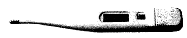
- 구강
- 직장
- 귓속의 고막
- 겨드랑이
(정답률: 76%)
70. 피부로부터 측정된 근전도 신호를 증폭하기 위한 증폭기에 대한 설명으로 틀린 것은?
- 근육 조직의 생리적 변화에 따른 이온 흐름 변화를 관찰하는 것이므로 전류 증폭기를 사용하여 신호를 증폭한다.
- 전극 모두에 공통적으로 유도되는 잡음을 제거하기 위해 공통모드제거비(CMRR)가 큰 증폭기를 사용한다.
- 증폭기의 입력 임피던스는 1~10MΩ 이상으로 커야 한다.
- 근전도 신호의 주파수는 10~250 Hz 범위에 있어 증폭기의 동작 주파수 범위는 10~500 Hz 정도이다.
(정답률: 39%)
71. CT-번호가 가장 큰 것은?
- 공기
- 나일론
- 뼈(경골)
- 금속성 보철물
(정답률: 75%)
72. 체외에서 인체로 방사선을 조사하는 고에너지 치료 장치 중 틀린 것은?
- 선형 가속장치(Linac)
- 표재 치료장치(Dermopan)
- 마이크로트론(Microtron)
- 밴더그래프 정전발전기(Van De Graaff electrostatic generator)
(정답률: 51%)
73. 페이스메이커 이식 후 주의사항으로 틀린 것은? (문제 오류로 실제 시험에서는 2,3번이 정답처리 되었습니다. 여기서는 2번을 누르면 정답 처리 됩니다.)
- 강한 전기나 자석의 영향을 받을 가능성이 있는 기기를 주의해야 한다.
- 휴대폰은 페이스메이커 이식과 무관하게 사용이 가능하다.
- MRI는 페이스메이커를 영구적으로 손상시키므로 MRI 촬영을 할 수 없다.
- 자석요(매트), 고주파/초음파 온열치료기 등은 사용하지 말아야 한다.
(정답률: 86%)
74. 환자감시장치에서 혈중산소포화농도(SpO2)에 대한 설명으로 틀린 것은?
- 적외선 빛과 빨간색 빛의 총합비교를 측정하여 값을 산출한다.
- 방출된 빛은 손가락 내의 혈관을 통해 수광부를 통해 검출된다.
- 수광부에서는 LED 발광을 통해 자외선과 빨간색 빛을 동시에 내보낸다.
- 산소와 결합한 헤모글로빈은 적외선을, 그렇지 않은 헤모글로빈은 빨간색 빛을 더 흡수하는 성질을 갖고 있다.
(정답률: 77%)
75. 30μF 콘덴서를 이용한 직류 제세동기에서 135 W/s 의 에너지를 설정할 경우, 이 때 제세동기의 충전전압은 몇 V 인가?
- 2000
- 3000
- 4000
- 5000
(정답률: 53%)
76. 환자의 체온측정에 이용되는 열전대의 기본 원리를 나타내는 것은?
- 제백 효과
- 펠티어 효과
- 열적외선 효과
- 압전 효과
(정답률: 64%)
77. 알콜, 에틸린그리콜 등에 활성분자 색소를 균일하게 녹인 매질을 활용한 레이저의 명칭은?
- 기체레이저
- 고체레이저
- 액체레이저
- 반도체레이저
(정답률: 85%)
78. 수소원자핵이 높은 에너지 준위로 천이된 뒤 시간이 지나면서 다시 원래의 상태로 돌아가는 현상은?
- T 1 이완
- 여기
- 평형
- 공명
(정답률: 75%)
79. 양전자방출단층촬영장치(PET)의 구성요서 중 소멸방사선의 위치정보 수집을 위한 장치는?
- 동시계수회로
- 광전자증배관
- 섬광체
- 조준기
(정답률: 69%)
80. 체외충격파 쇄석술(extracorporeal shock wave lihotripsy)의 충격파를 발생시키는 방법에 대한 설명으로 틀린 것은?
- 미소발파 방식 : 미량의 화학물질을 폭파시켜 발생되는 충격파를 이용하는 방식
- 수중방전 방식 : 수중에 놓인 전극간 방전을 통해 발생하는 충격파를 이용하는 방식
- 레이저 방식 : 금속막을 전자석으로 진동시켜 발생되는 압력파를 집속시켜 충격파를 만드는 방식
- 압전소자 방식 : 세라믹 소자에 고주파를 인가하여 발생하는 초음파(압력파)를 이용하는 방식
(정답률: 83%)
5과목: 의용기계공학
81. 키틴(chitin)에 대한 설명으로 틀린 것은?
- 물이나 열에 녹지 않는 다당질이다.
- 인체에서 잘 분해된다.
- 세균의 세포막 구성 성분 중 하나이다.
- 수소결합에 의한 강한 결정 구조이다.
(정답률: 72%)
82. 혈관에서 발생하는 현상에 대한 설명으로 틀린 것은?
- 인체의 평균혈류속도는 대동맥에서 25cm/s, 모세혈관에서 0.⑤cm/s 정도이다.
- 혈관에서의 평균압력이 높은 순서는 동맥, 정맥, 모세혈관 순이다.
- 혈관벽 응력은 혈관 두께에 반비례하고, 내압과 직경에 비례한다.
- 정맥은 동맥에 비해 직경은 크나 탄성이 적다.
(정답률: 62%)
83. 관절의 일률(power)을 구하는 식은?
- 힘 × 거리(모멘트암) × 관절 각속도
- 힘 × 관절각도 × 관절 각가속도
- 힘 × 거리(모멘트암) × 관절 각가속도
- 관절두께 × 거리(모멘트암) × 관절 각속도
(정답률: 72%)
84. 생체조직 중에서의 점도가 제일 큰 것은?
- 뼈
- 물
- 혈액
- 연조직
(정답률: 70%)
85. 흥분자극에 의해 신경세포, 근육세포, 감각세포, 분비세포들의 세포막에서 발생하는 활동전위(active potential)에 대한 설명으로 틀린 것은?
- 역치 이상의 자극에서만 활동전위가 발생된다.
- 활동전위가 인접부위의 세포로 전달됨으로써 생체자극이 전달이 이루어진다.
- 흥분자극을 받으면 세포막의 Na+ 투과성이 높아져서 다량의 Na+ 이 유입됨에 따라 활동전위가 생성된다.
- 활동전위가 되면 세포내 전위가 양의 전위에서 음의 전위로 전환된다.
(정답률: 69%)
86. 깁스의 상률(Gibbs' phase rule)에 대한 식을 옳게 표현한 것은? (단, f : 자유도, c : 조성의 수, p : 상의 수이다.)
- f = c + p + 1
- f = c – p - 1
- f = c – p + 2
- f = c + p – 2
(정답률: 57%)
87. 혈압이 일정할 때 혈관의 직경이 2배가 되면 혈류량은?
- 변함이 없다.
- 2배가 된다.
- 4배가 된다.
- 16배가 된다.
(정답률: 73%)
88. 표면에 쉽게 산화피막이 형성되어 내부식성을 향상 시키는 생체용 금속재료는?
- 니켈(Ni)
- 티타늄(Ti)
- 철(Fe)
- 구리(Cu)
(정답률: 56%)
89.
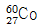
원자핵에 있는 중성자 수는?- 27
- 33
- 60
- 87
(정답률: 80%)
90. 의료현장에서 빛을 사용하는 방법으로 옳게 나열한 것은?
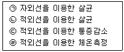
- ㉠, ㉡
- ㉡, ㉢
- ㉠, ㉢, ㉣
- ㉡, ㉢, ㉣
(정답률: 75%)
91. 경골은 하지의 주요한 체중 부하골이다. 만약 70 kg의 사람이 해부학적 자세로 서 있을 때 체중의 25%가 한쪽 슬관절 근위부에 있다면, 양쪽 경골에 작용하는 총 압축력은 약 몇 N 인가?
- 350
- 450
- 700
- 1⑤0
(정답률: 56%)
92. 인공뼈로 가장 많이 사용되는 골유착성 세라믹제는?
- 알루미나(Al2O2)
- 지르코니아(ZrO2)
- 탄소 세라믹(carbon ceramics)
- 수산화인회석(hydroxyapatite)
(정답률: 72%)
93. 열 전도에 대한 설명으로 틀린 것은?
- 두 물체의 온도차이가 클수록 열전달이 증가한다.
- 두 물체사이의 표면적이 증가할수록 열전달이 증가한다.
- 거리에 비례하여 열전달이 증가한다.
- 열전도계수에 비례하여 열전달이 증가한다.
(정답률: 82%)
94. 염증반응의 순서로 옳은 것은?
- 세포침투 → 피복형성 → 재형성 → 소멸
- 재형성 → 피복형성 → 세포침투 → 소멸
- 세포침투 → 재형성 → 피복형성 → 소멸
- 세포침투 → 재형성 → 통합 → 소멸
(정답률: 67%)
95. 관절을 형성하는 두 분절 사이의 각도가 감소할 때 발생하는 운동은?
- 내전(adduction)
- 외전(abduction)
- 신전(extension)
- 굴곡(flexion)
(정답률: 59%)
96. 의료용 기계요소 중 동력전달요소가 아닌 것은?
- 체인
- 스프로킷 휠
- 미끄럼 베어링
- 벨트전동
(정답률: 70%)
97. 인장 시험을 위한 응력-변형률 그래프에서 각 항목에 해당하는 명칭으로 옳은 것은?
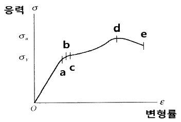
- a : 항복점(yield point)
- c : 파괴점(rupture point)
- d : 극한점(ultimate point)
- e : 탄성한계(elastic limit)
(정답률: 73%)
98. 의료용으로 사용되는 고분자 생체재료는 열, 화학약품 또는 기계적인 요소에 의하여 퇴화된다. 다음 중 건식 열소독이 가능한 고분자 생체재료는?
- 테프론(PTFE)
- 폴라아미드(Polyamide)
- 폴리에틸렌(Polyethylene)
- 폴리메틸메타크릴레이트(Polymethl methacrylate)
(정답률: 67%)
99. 탈분극 이후 세포막 양단의 전위가 다시 안정막 전위로 회복 되는 현상은 무엇인가?
- 불응기
- 과분극
- 안정기
- 재분극
(정답률: 79%)
100. 생체재료의 내부의 결정 구조를 분석할 수 있는 방법은?
- X-선 에너지 분산 분석법
- X-선 회절 분석법
- X-선 단층 촬영법
- 주사 전자현미경
(정답률: 61%)